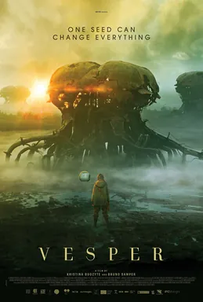

The genetics
Genetics shapes both the world and the story. The backstory is a cautionary tale: a massive bet on genetically modified organisms, meant to save the environment, escaped control and caused the collapse. In the present, genetic control is a tool of power: the citadels' scientists engineer seeds that are locked to a single harvest (the French Wikipedia notes the inspiration in real 'terminator seed' technology) and produce Jugs, artificial humans bred for slave labour. Against this, Vesper is a self-taught biohacker whose experiment, using material from the sentient Jug Camellia, makes the seeds fertile, an act of liberation that ends the film on a hopeful note. Elias, the scientist who created Camellia, is a fugitive because making a sentient Jug is a crime. The film, described by critics as a thought experiment on the privatisation of living things, treats genetic technology as neither good nor evil in itself: it depends on who controls it. The mechanism of the seed unlocking (a tune played by Camellia) is fantastical.
How genetics is portrayed
- Overall portrayal of genetics
- mixed A central heroic practitioner (Vesper) whose genetic work liberates is set against an oligarchy that uses genetic control to dominate, after a GMO catastrophe; the film ends on hope, showing genetics as harmful when monopolised and good in her hands.
- Outcome of the genetic intervention
- mixed The backstory genetic technology destroyed the ecosystem and the citadels use engineered seeds and Jugs to oppress, but Vesper's unlocking of the seeds gives the world a chance of free food at the end.
- Citadel scientists
- villain Aim: power, commercial (negative). The ruling citadels' scientists keep the secret of making seeds fertile and produce Jugs as slave labour, using genetics to keep the outside population dependent; their soldiers kill Jonas and hunt Camellia. Affiliation 'other': the citadels are an oligarchic city-state.
- Vesper
- hero Aim: benevolent (positive). The young biohacker unlocks the citadel's sterile seeds so that 'people will never starve again' and spreads them at the end; she is the film's heroine.
- Elias
- neutral Aim: not stated (not applicable). The citadel's head scientist created Camellia, an illegal sentient Jug, and fled with her; the sources do not say why he made her, and he is killed by Jonas early, mourned by Camellia.
The story
In a bleak future, a failed attempt to avert ecological collapse with genetic technology has released engineered viruses and organisms that wiped out edible plants, animals and much of humanity. An oligarchy lives in fortified citadels and sells seeds that yield only one harvest, while everyone else scrapes by outside. Thirteen-year-old Vesper, a gifted biohacker, lives in the forest with her paralysed father Darius, who speaks through a drone, near her brutal uncle Jonas, who sells children's blood to the citadel and keeps mindless artificial labourers called Jugs. When a citadel ship crashes, Vesper rescues Camellia, who turns out to be an illegal, sentient Jug made by the citadel scientist Elias. Using samples from Camellia, Vesper finds a way to unlock the citadel's sterile seeds. Jonas betrays them, soldiers come, Darius dies holding them off and Camellia gives herself up. Vesper leaves with orphaned children and scatters the fertile seeds on the wind.